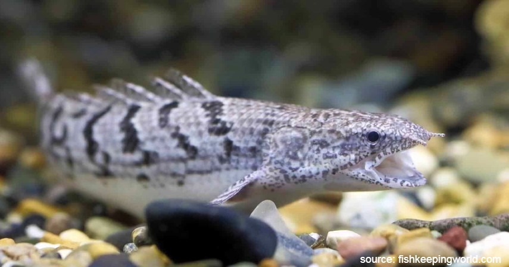

Ikan Palmas
Kalau kamu mengaku sebagai penyuka ikan predator untuk peliharaan, pasti sudah enggak asing dengan ikan yang satu ini.
Ikan yang termasuk dalam salah satu ikan primitif ini berhabitat asli di Afrika bagian Sungai Nil. Bentuknya yang seperti naga dengan sirip di punggung sangatlah unik dan menjadi favorit pecinta ikan pemangsa.
Perawatan
Salah satu peralatan yang sangat penting adalah akuarium, karena akan menjadi tempat hidup ikan naga (palmas) nantinya. Cara merawat ikan naga (palmas) yang tepat adalah dengan mengatur kondisi akuarium dengan benar.Agar ikan naga leluasa ditempat hidupnya nanti, pilihlah akuarium dengan ukuran yang tepat. Anda bisa menggunakan akuarium dengan ukuran 100 x 50 x 40 cm. Dengan ukuran akuarium tersebut membuat ikan naga leluasa dalam berenang nantinya. Selain segi ukuran, anda juga harus menyiapkan peralatan standar akuarium.Seperti aerator untuk meningkatkan adanya kandungan udara didalam air akuarium.Potongan kayu, batu atau pasir juga penting agar lebih mirip dengan habitatnya.
Pengisian air untuk akuarium perlu diperhatikan sebagai salah satu cara merawat ikan naga (palmas) yang tepat dan benar. Sebelum memasukkan air ke dalam akuarium, pastikan air tersebut bersih dan bebas dari kandungan kimia seperti kaporit.Untuk itu alangkah lebih baik untuk mengendapkannya selama sehari. Untuk air akuarium ikan naga harus memiliki kadar keasaman sebesar pH 6,5-7. Masukkan air tersebut kedalam akuarium dengan tinggi 25 cm agar ikan naga tidak mudah kabur atau loncat.Temperatur air juga harus diperhatikan untuk ikan naga, yakni sekitar 16-27 derajat celcius.Gunakan thermometer untuk mengukur suhu air.
Ikan bukan hanya membutuhkan tempat untuk hidup, namun juga memerlukan makanan untuk bertahan hidup.Ikan naga adalah hewan karnivora atau pemakan daging. Agar tetap sehat cara merawat ikan naga (palmas) yang harus dilakukan adalah dengan pemberian pangan yang tepat dan rajin. Anda bisa memberinya pangan seperti udang, anakan ikan mas, jangkrik, anakan ikan lele, cacing, cere dan lain sebagainya. Agar kebutuhan gizi terpenuhi anda bisa sesekali memberinyapelet.Berikan makanan sebanyak 3 kali sehari dengan dosis yang tepat dan secukupnya.
Seperti manusia, hewan juga merasakan stress. Untuk itu cara merawat ikan naga (palmas) harus dilakukan dengan tepat dan benar. Agar ikan tidak stress kondisi akuarium harus bersih dan sehat, untuk itu pembersihan akuarium harus dilakukan dengan teratur. Pastikan anda mengganti ¾ air volume akuarium tersebut dengan air baru setiap seminggu sekali. Dan untuk pembersihan seluruh bagian akuarium bisa anda lakukan sebanyak 1 bulan sekali agar kualitas air tetap terjaga. Jangan sampai membuat lingkungan menjadi kotor karena akan membuat ikan stress.